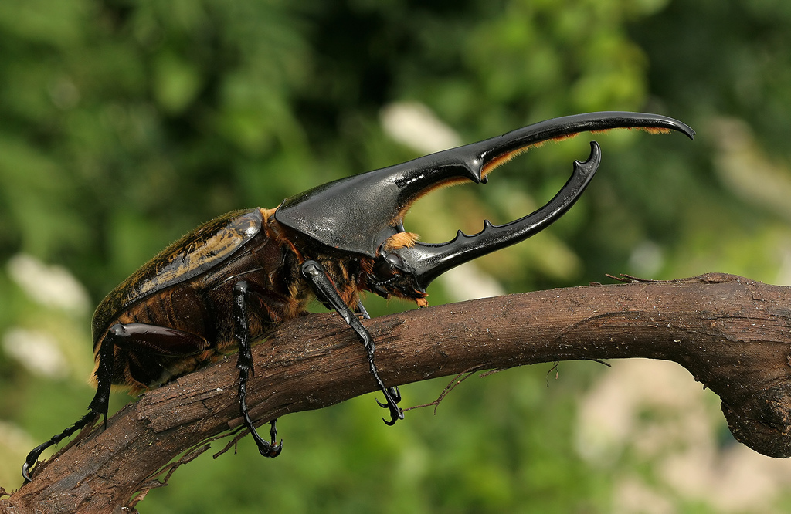

O besouro-hércules ou simplesmente hércules (denominado popularmente, em inglêsː Hercules beetle; em espanholː escarabajo Hércules) é um inseto da ordem Coleoptera e da família Scarabaeidae, subfamília Dynastinae, cientificamente denominado Dynastes hercules; um besouro do tipo escaravelho cujo habitat atual é endêmico das ilhas de Guadalupe e Dominica, nas Pequenas Antilhas; um arquipélago tropical localizado ao norte da América do Sul, na região neotropical envolta pelo mar do Caribe; onde fora coletado o seu tipo nomenclatural; reduzindo-se a sua distribuição geográfica graças a um estudo publicado em 2017 por J.P. Huangː The Hercules beetles (subgenus Dynastes, genus Dynastes, Dynastidae): a revisionary study based on the integration of molecular, morphological, ecological, and geographic analyses.[3] A espécie fora descrita em 1758, por Carolus Linnaeus, com a denominação Scarabaeus hercules em seu Systema Naturae,[4] sendo o significado da palavra usada em seu descritor específico (hercules), em latim, dado em homenagem ao herói da mitologia grega, filho de Júpiter.

A mariposa-atlas, ou borboleta-atlas[1] ou atlas-gigante (Attacus atlas) é uma mariposa de grandes dimensões da família Saturniidae, encontrada nas florestas tropicais e subtropicais do sudeste asiático, sul da China, comum ao longo do arquipélago malaio, da Tailândia à Indonésia.[2] Na Índia, as mariposas-atlas são cultivadas por sua seda em uma capacidade não comercial. Ao contrário daquela produzida pela mariposa com parentesco tipo bicho-da-seda (Bombyx mori), a seda da mariposa-atlas é secretada como vertentes descontínuas. Essa seda, parecida com algodão, de cor marrom, é tida como de grande durabilidade e é conhecida como fagara.[3] Os casulos da mariposa-atlas são utilizados como bolsas em Taiwan.
As mariposas-atlas são consideradas as maiores mariposas do mundo[4] em termos de área de superfície total da asa (para mais de 400 cm²) . Sua envergadura também é considerada entre as melhores, de 25–30 cm. As fêmeas são razoavelmente maiores e mais pesadas.
A maior espécie de Lepidoptera, em termos de envergadura, é tida como sendo a Feiticeira-branca (Thysania agrippina). Um espécime de Attacus atlas de Java media 262 mm enquanto se afirma que a Thysania tenha entre 270-280 mm. Baseado em algumas espécimes espalhados e ângulo da asa, a medida real de 289 mm foi estimada.[5]
As mariposas-atlas são tidas como nomeadas em homenagem ao titã da mitologia grega, Atlas, ou por suas asas com padrões tipo mapas. Em Hong Kong, o nome cantonês traduz como "mariposa da cabeça de cobra", se referindo à extensão da asa anterior, que gera uma leve semelhança a uma cabeça de cobra.[6]

O termo formiga-leão[1] é a designação comum aos insetos neurópteros da família dos Myrmeleontidae (Mirmeleonídeos),[2] cujas larvas de quem o nome vulgar deriva, são providas de longas mandíbulas e se enterram no fundo de um funil cônico por elas construído na areia para capturar presas.[3]
Também são conhecidos pelos nomes de formigão, furão, joão-torrão, mirmeleão, piolho-de-urubu e tatuzinho.[4][5][6]
Apesar do nome vulgar, estes insetos não pertencem ao grupo das formigas.São insetos de distribuição neotropical; pertencem à ordem Neuropta, que são todas predadoras tanto na fase larval quanto na adulta.[3]
Mede 4 cm de comprimento 8 cm de envergadura, possuem antenas filiformes. O adulto possui dois pares de asas, que quando paradas, cobrem o corpo como um abrigo. Voa apenas ao anoitecer ou à noite. A larva da formiga-leão pode jejuar durante oito meses, e a ninfa se torna adulta em um mês. A vida de um formiga-leão adulta é muito curta: vai da primavera ao outono.